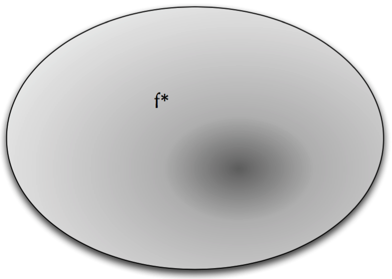
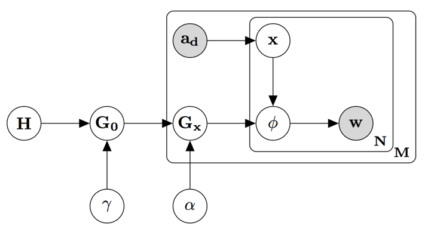
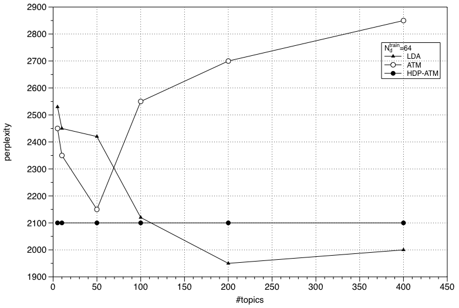
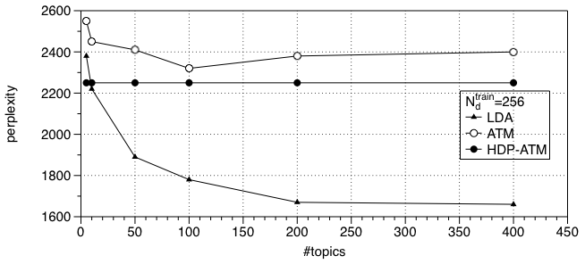
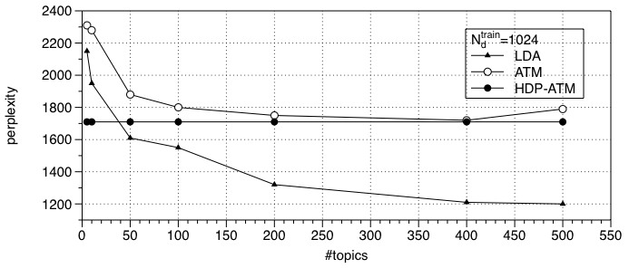

基于HDP的作者主题模型
Table of Contents
研究背景
- 提取文档内容的特征早已成为信息检索、基于统计的自然语言理解、机器学习等领域的标准问题。有效地表示文档内容是为文档的聚类、分类、检索的重要先决条件。
- 随着互联网的不断发展,数据的类型也是层出不穷。文档不再只是以单纯的文本形 式出现,文档可能带有其他的一些属性或者标签。比如,文档可能含有作者,时间,地 理位置等等其他的属性。那么我们怎样来挖掘这些属性(或者实体)的主题(或者兴趣) 呢?
研究目标
- 通过对作者兴趣的建模，根据一大批文档的内容，我们可以回答一系列重要问题的查询。
- 我们可以知道作者是从事哪个领域的
- 给定一篇文章，我们可以判断哪些作者所从事的领域（主题）与该篇文章类似
- 推断一篇文章的作者
主题模型（LDA）简介
- LDA中，一篇文档的生成可以分三步：
- 每一篇文档从 Dirichlet 分布采样一个基于主题的分布;
- 对于每一篇文章中的每一个单词,采样一个主题的索引;
- 从这个主题中关于词的分布采样这个单词。
作者模型简介
- 作者模型中，每一篇文章中的每一个单词的生成过程如下：
- 为每一个词根据均匀分布从该文档的所有作者\(a_d\)中选择一个作者\(x\)；
- 根据这个作者所在的主题的词分布\(\phi\)生成这个词。
作者主题模型
- 在作者主题模型中，每篇文档中的每一个单词的生成过程如下：
- 为这个单词从该篇文档的所有作者\(a_d\)随机选择一名作者\(x\)；
- 每一个作者都有一个对于所有主题的混合分布\(\theta\)，\(\theta \sim Dirichlet(\alpha)\)。根据\(\theta\)，采样一个主题的索引号\(z\)；
- 没个主题对应一个在词上的多项式分布\(\phi\)，且独立同分布，\(\phi \sim Dirichlet(\beta)\)。这个词就根据选中主题的对应分布\(\phi\)采样得到。
基于HDP的作者主题模型
上面介绍的模型都属于参数模型（parameter model）。
- 参数模型
- 是指模型是在有限空间的参数估计，
- 例：
作者主题模型中所有主题的个数\(K\)是需要人为设定的。 那么问题是\(K\)设置成多少值呢？ 我们就需要进行模型选择或者模型比较， 通过设置不同\(K\)值，进行交叉验证。
参数模型的缺点
- 交叉验证，需要消耗更多的计算资源；
- 当训练集数据的增加以后，又需要经过新一轮的模型选择确定\(K\)。

Figure 1: 参数模型
基于HDP的作者主题模型
- 是一个非参数模型
- 不需要进行模型选择，自动产生主题数目\(k\)
- 当训练数据增加的时候可以进行迭代的训 练,而不需要像主题模型那样重新进行训练以及模型的选择,大大降低了计算资源的消耗

Figure 2: 非参数模型
基于HDP的作者主题模型 (cont.)
基于HDP的作者主题模型的生成过程如下：
对于每篇文章的每个单词，
- 根据均匀分布，在本文档的所有作者中采样一个作者；
- 根据作者级的Dirichlet process \(G_x\)，采样对应主题的词分布\(\phi\)。而\(G_x\)采样自语料级的Dirichlet process \(G_0\)；
- 根据该主题的词分布\(\phi\)，生成该词。

Figure 3: 基于HDP的作者主题模型
评价标准
混淆度是衡量概率模型训练参数的标准方法。定义如下：
混淆度越低，模型的泛化越好。
实验结果

Figure 4: 模型比较(\(N_d^{train}=64\))
实验结果

Figure 5: 模型比较(\(N_d^{train}=256\))
实验结果

Figure 6: 模型比较(\(N_d^{train}=1024\))
实验结果
我们可看到，随着主题数的变化（5，10，50，100，200，400，500），
- 当\(N_d^{train}=64\)时，ATM的在主题数50到100的时候达到最小，而根据实验，当\(N_d^{train}=64\)时，HDP-ATM最后形成的主题数76个，从曲线上符合是ATM的最优值的范围。
- 同样当\(N_d^{train}=256\)时，ATM的在主题数100到200的时候达到最小，而根据实验，当\(N_d^{train}=256\)时，HDP-ATM最后形成的主题数145个，从曲线上符合是ATM的最优值的范围。
- 同样当\(N_d^{train}=1024\)时，ATM的在主题数400到500的时候达到最小，而根据实验，当\(N_d^{train}=1024\)时，HDP-ATM最后形成的主题数4个，从曲线上符合是ATM的最优值的范围。